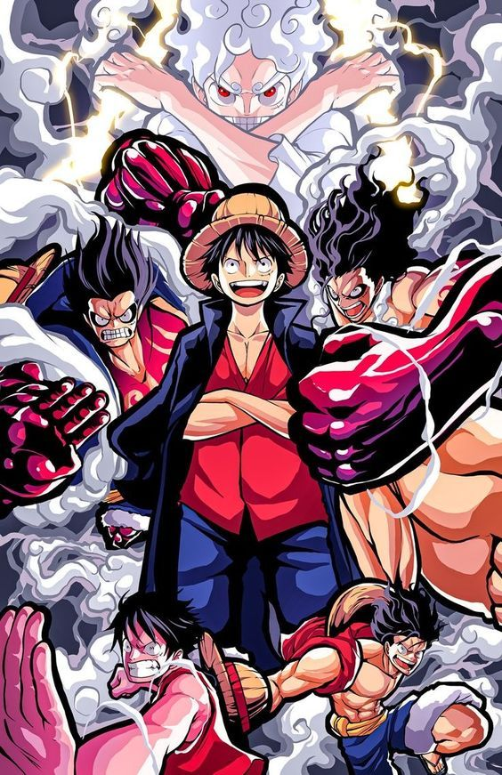
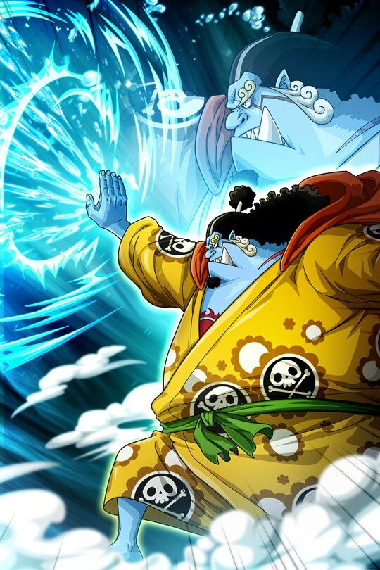

¿Quiénes son los Mugiwaras?
Los Mugiwaras en One Piece o también conocidos como Sombreros de Paja, son la banda pirata que dirige Monkey D.Luffy.
A esta banda se han ido uniendo tripulantes poco a poco, cada uno tiene sus propios sueños y ambiciones, y todos tienen
un gran corazón. Quieren que salga a la luz todo lo que ocurrió en el siglo vacío, que es un siglo que fue borrado de la historia
por el Gobierno Mundial, ya que lo más probable es que hayan cometido actos deleznables. Esta tripulación van de isla en isla
para descubrir la verdad y a la vez cumplir sus sueños. Todos aportan algo al grupo, cada uno tiene sus habilidades con las
cuales son útiles.
Monkey D.Luffy
Luffy es conocido por su personalidad extrovertida, su amor por la aventura y su deseo de proteger
a sus amigos. A menudo es ingenuo, pero su determinación y lealtad son inquebrantables.
Es el capitán de los Piratas del Sombrero de Paja y se preocupa profundamente por cada miembro
de su tripulación. A pesar de su actitud despreocupada, Luffy toma situaciones serias cuando es
necesario, especialmente cuando se trata de proteger a sus amigos o perseguir sus sueños.
Luffy consume la Fruta del Diablo Gomu Gomu, una Fruta del Tipo Paramecia que le otorga la capacidad
de estirar su cuerpo como si fuera de goma. Esta habilidad le confiere una serie de técnicas y
movimientos únicos.
Se convirtió en Yonkou en Wano, tras derrotar a Kaido con su fruta recién despertada. Es uno de los piratas
más temidos actualmente y uno de los más poderosos.

Gear Second: Luffy desarrolla la técnica llamada "Gear Second", donde acelera su
circulación sanguínea, aumenta la velocidad y fuerza de sus ataques. Esto provoca que su cuerpo se
vuelva temporalmente recubierto por una capa de vapor.
Gear Third: Otra técnica de Luffy, "Gear Third"
, implica inflar sus huesos (específicamente su brazo) utilizando aire, creciendo enormemente en
tamaño y aumentando la fuerza de sus golpes. Sin embargo, esto tiene como consecuencia una reducción
temporal de su velocidad.
Haki: Luffy también desarrolla habilidades de Haki, una energía espiritual
que permite a los usuarios realizar hazañas sobrehumanas. Luffy ha demostrado dominar tanto el Haki
del Rey Conquistador como el Haki de Observación y el Haki del Armamento.
Gear Fourth(Boundman):se caracteriza por el aumento masivo del cuerpo de Luffy y una mejora significativa
en su fuerza y velocidad. Luffy se hincha y adquiere una apariencia más musculosa y robusta.
Gear Fourth(Tankman):Una forma más defensiva de Gear Fourth. Luffy adopta una postura más compacta y defensiva,
similar a un tanque. Luffy se vuelve más redondo y adquiere una apariencia más rechoncha.
Gear Fourth(Snakeman): Una forma más enfocada en la velocidad y en ataques evasivos. Luffy adopta una postura más
delgada y ágil, similar a una serpiente. Luffy se vuelve más delgado y su postura se vuelve más aerodinámica.
Gear Fifth(Nikoman): Es el despertar de la fruta de Luffy y puede hacer que las cosas que el toque se vuelvan de goma.
Tiene un aspecto normal pero con el pelo blanco y tiene muchas posibilidades. Se podría decir que con esta transformación
se vuelve libre.
Roronoa Zoro
Zoro se unió a la tripulación durante la saga del "Village of Romance"
(Villa Syrup) en el arco de Loguetown. Antes de unirse a los Piratas del Sombrero de Paja,
Zoro era un cazarrecompensas y un espadachín errante. Luffy lo conoció cuando Zoro estaba a
punto de ser ejecutado en Loguetown, y Luffy intervino para salvarlo. Impresionado por la
determinación y el sueño de Luffy de convertirse en el Rey de los Piratas, Zoro decidió unirse a la
tripulación. Zoro ocupa la posición de "espadachín principal" y es considerado el segundo al mando
después de Luffy.
Es un personaje extremadamente leal a su capitán y a la tripulación en general.
Su dedicación a la causa y su habilidad en el combate lo han convertido en un pilar fundamental para
el equipo. Es conocido por ser serio, reservado y muy centrado en sus objetivos. Tiene un fuerte
sentido del honor y la lealtad, y a menudo se le ve como el tipo de persona que está dispuesta a
sacrificarse por el bienestar de sus amigos. Zoro también es famoso por su amor por la espada y por
su deseo de convertirse en el mejor espadachín del mundo. Su ambición es convertirse en el mejor
espadachín del mundo, un objetivo que comparte con su antiguo amigo y rival, Dracule Mihawk.
Maestría en el uso de espadas: Zoro es un espadachín extremadamente habilidoso y
posee una destreza sobresaliente en el manejo de espadas. Inicialmente, utiliza un estilo de tres espadas
conocido como "Santoryu". A lo largo de la serie, desarrolla y perfecciona sus habilidades con cada una de sus
espadas, lo que le permite realizar ataques poderosos y tácticas únicas en el combate.
Santoryu - Tres Espadas:
La técnica de tres espadas de Zoro, Santoryu, es su estilo de lucha característico. Le permite emplear tres katanas
simultáneamente con gran destreza y velocidad. Cada espada tiene un nombre y un estilo de ataque específico, lo que
le brinda a Zoro una amplia variedad de movimientos en el campo de batalla.
Haki del Armamento: Zoro ha demostrado
ser capaz de utilizar el Haki del Armamento, una forma de Haki que permite al usuario endurecer partes de su cuerpo o
su arma para aumentar la fuerza y la resistencia. Esta habilidad es crucial en la lucha contra usuarios de frutas del
diablo con poderes físicos.
Asura: Asura es una técnica única de Zoro que implica una
manifestación espiritual que otorga a sus tres espadas una apariencia demoníaca. Esta técnica
aumenta enormemente su poder y le permite realizar ataques extraordinarios. Es una habilidad que
ha desarrollado a lo largo de sus batallas y momentos de extrema necesidad.
Vinsmoke Sanji
Sanji se unió a los Piratas del Sombrero de Paja durante el arco de Baratie.
Antes de unirse, Sanji trabajaba como chef en el restaurante flotante Baratie. Luffy lo conoció
cuando los Piratas de Krieg atacaron el Baratie, y Sanji se unió a la tripulación después de que
Luffy le ofreció la oportunidad de vivir una vida de aventuras en el mar. A diferencia de Zoro,
Sanji no utiliza armas en el combate; en cambio, confía en sus habilidades de combate basadas en
el estilo de piernas. Es el chef principal y un gran combatiente en la tripulación.
Sanji es considerado como el "comandante" de la sección de cocina y tercero al mando. Su estilo de
combate se basa en técnicas de artes marciales y poderosas patadas.
Sanji es conocido por ser un caballero apasionado y un mujeriego empedernido. Si
bien suele tener una personalidad relajada y divertida, su respeto por las mujeres es una
característica distintiva. Sanji también es apasionado por la cocina y se toma muy en serio
su papel como chef de la tripulación. Aunque tiene conflictos con Zoro de vez en cuando debido
a sus diferencias en la filosofía de lucha y roles a bordo del barco, ambos personajes comparten
un profundo respeto mutuo.

Estilo de Combate Black Leg: Sanji es conocido por su
estilo de combate Black Leg, que se centra en el uso de patadas rápidas y poderosas. Ha desarrollado
técnicas poderosas, como el "Diable Jambe", que consiste en prender fuego a su pierna con la fricción
y el calor generado por su velocidad de patada.
Diable Jambe:
Una técnica especial que le permite a Sanji prender fuego a su pierna mediante la rápida rotación.
Esta habilidad aumenta la potencia de sus patadas y le permite infligir daños devastadores a sus
oponentes.
Sky Walk y Moon Walk:Sanji ha desarrollado habilidades únicas conocidas
como Sky Walk y Moon Walk. Sky Walk le permite caminar por el aire mediante patadas rápidas, mientras
que Moon Walk le permite "caminar" por el aire al desafiar la gravedad con sus piernas.
Haki de Observación:Sanji ha demostrado ser capaz de utilizar el Haki
de Observación. Esta habilidad le permite prever los movimientos de sus oponentes y reaccionar de
manera más efectiva en combate.
Ifrid Jambe:Una versión más poderosa que el diable jambe, su pierna
comienza a obtener fuego de color azul y aumenta su velocidad de una manera inimaginable a la vez que su fuerza.
Nami
Nami se unió a los Piratas del Sombrero de Paja durante el arco de Orange Town.
Inicialmente, ella trabajaba como navegante para los Piratas de Arlong, pero después de que Luffy
derrotara a Arlong y liberara su pueblo natal, Nami decidió unirse a la tripulación de Luffy. Su
habilidad como navegante y cartógrafa es crucial para la navegación de la tripulación. Nami ocupa
el rol de navegante en los Piratas del Sombrero de Paja. Su habilidad para entender el clima, leer
los log pose y realizar cartografía detallada es esencial para que la tripulación navegue a través
del peligroso Grand Line. Nami también es responsable de trazar rutas seguras y estrategias.
Es conocida por su inteligencia, astucia y su amor por el dinero. Inicialmente, se une a
los Piratas del Sombrero de Paja con la esperanza de reunir una gran cantidad de dinero para comprar
la libertad de su aldea. A lo largo de la serie, su lealtad hacia la tripulación crece, y su personalidad
evoluciona a medida que se enfrenta a diversos desafíos.
Clima-Tact: Nami utiliza un arma llamada
Clima-Tact, que fue modificado por Usopp a partir de su bastón original. El Clima-Tact le permite
manipular el clima y crear diferentes efectos meteorológicos, como nubes, relámpagos y lluvia.
A lo largo de la serie, Nami mejora el Clima-Tact y desarrolla nuevas técnicas.
Sorcery Clima-Tact y Perfect Clima-Tact:
Después de la saga de Skypiea, Nami obtiene el Sorcery Clima-Tact, una versión mejorada de su arma
que le permite realizar técnicas más avanzadas y poderosas. Posteriormente, durante el arco de Enies
Lobby, Franky modifica el Sorcery Clima-Tact para convertirlo en el Perfect Clima-Tact.
Haki de Observación: En el arco de Whole Cake Island, Nami ha demostrado
ser capaz de utilizar el Haki de Observación para percibir la presencia de los oponentes y anticipar
sus movimientos.
Habilidades de Navegación: Nami posee un conocimiento excepcional sobre
la navegación y la meteorología. Puede leer y interpretar los log pose, una brújula especial
utilizada para navegar por el Grand Line, y anticipar cambios en el clima y las corrientes marinas.
Zeus: En la saga de Wano, la nube de Big Mom denominada Zeus se une a Nami,
lo cual le da una gran cantidad de poder y puede lanzar rayos de una fuerza descomunal. Además este se puede
juntar a su Clima-Tact para que ella lo saque cuando quiera.
Usopp
Usopp se unió a los Piratas del Sombrero de Paja durante el arco de Syrup Village. Inicialmente, Usopp era el francotirador y el narrador de historias del pueblo Syrup,
y se unió a la tripulación después de que Luffy y sus amigos lo ayudaran a liberar su pueblo de
la amenaza de los Piratas de Kuro. Su sueño es convertirse en un gran guerrero de los mares y un
valiente guerrero del mar. Usopp ocupa el papel de francotirador en los Piratas del Sombrero de Paja.
Su habilidad con el tirachinas y su destreza en la fabricación de inventos y artilugios lo convierten
en un miembro valioso del equipo. Además, Usopp es un narrador apasionado y cuenta historias
increíbles a la tripulación.
Es conocido por ser un soñador y un mentiroso compulsivo. Aunque inicialmente es temeroso y
tiende a exagerar sus hazañas, Usopp demuestra ser valiente cuando se enfrenta a desafíos reales.
A lo largo de la serie, su autoconfianza y su determinación crecen, y se convierte en un miembro
valioso y leal de la tripulación.
Inventor y Tirador Experto: Usopp es un hábil inventor
y tirador, utilizando su ingenio para crear dispositivos y artilugios que ayudan a la tripulación en diversas
situaciones. Su arma principal es una honda modificada, la cual usa con gran precisión y alcance. A medida que
avanza en la serie, mejora sus habilidades de francotirador y desarrolla nuevas armas, como el Kabuto y el Kuro
Kabuto.
Dial y Pop Greens:
Durante el arco de Skypiea, Usopp adquiere conocimientos sobre el uso de los Dial, objetos con propiedades especiales.
Luego, en el arco del Archipiélago Sabaody, adquiere semillas de plantas especiales llamadas Pop Greens, que pueden crecer
instantáneamente en formas útiles para la tripulación.
Haki de Observación: Durante el arco de Dressrosa, Usopp manifiesta el Haki del Observador,
permitiéndole percibir la presencia de los oponentes y anticipar sus movimientos.
Tony Tony Chopper
Tony Tony Chopper se une a los Piratas del Sombrero de Paja durante el arco de Drum Island. Inicialmente,
Chopper era un reno que consumió la Fruta Hito Hito no Mi, Modelo: Reno, lo que le permitió obtener la forma y la inteligencia
de un humano. Su sueño es convertirse en el médico más grande del mundo y crear un remedio que cure cualquier enfermedad.
Es muy dulce y sensible, se preocupa mucho por sus compañeros y aunque parezca adorable e inofensivo también tiene una gran fuerza.
Su maestro murió ante sus ojos y fue el único humano que hasta entonces lo había tratado con respeto. Desde entonces hace todo lo posible para mejorar sus habilidades
y conocimientos médicos, y decidió aventurarse con Luffy y los demás.
Transformaciones y Fruta Hito Hito: Chopper tiene la capacidad única de
transformarse en diferentes formas gracias a la Fruta Hito Hito no Mi, Modelo: Reno. Estas transformaciones incluyen su forma
original de reno, una forma humanoide llamada "Chopper Point", y varias formas más humanoides y monstruosas a medida que avanza
en la serie.
Rumble Ball: Chopper utiliza una sustancia especial llamada Rumble Ball para acceder a formas de transformación
temporales y únicas. Estas transformaciones le otorgan habilidades aún más extraordinarias, pero el uso excesivo de la Rumble Ball puede ser
peligroso y descontrolado.
Kung Fu Point y Monster Point: Después del arco de Enies Lobby, Chopper desarrolla nuevas formas de transformación.
"Kung Fu Point" aumenta sus habilidades físicas y de combate, mientras que "Monster Point" es una forma gigantesca y poderosa que Chopper utiliza
con moderación debido a sus efectos secundarios temporales.
Médico y Herbólogo:
Chopper es el médico de los Piratas del Sombrero de Paja y es altamente hábil en el tratamiento de heridas y enfermedades. Además,
tiene un profundo conocimiento de las plantas medicinales y hierbas, lo que le permite crear remedios efectivos. Su habilidad médica
es vital para la supervivencia de la tripulación en numerosas situaciones.
Nico Robin
Nico Robin se une a los Piratas del Sombrero de Paja durante el arco de Arabasta. Inicialmente, era la arqueóloga del
Baroque Works y tenía como objetivo encontrar el siglo perdido, la historia antigua que ha sido borrada del conocimiento común. Su
habilidad para leer Poneglyphs, antiguas inscripciones que contienen información crucial sobre el mundo, la convierte en un recurso invaluable.
Tiene una personalidad tranquila y serena que refleja su naturaleza reservada. Es una mujer inteligente y erudita, con un profundo conocimiento de la historia antigua del mundo.
Aunque suele mantener una expresión calmada, su presencia destaca por su sabiduría y perspicacia. A medida que se integra en los Piratas del Sombrero de Paja, demuestra lealtad
y un sentido de camaradería, superando su pasado oscuro y convirtiéndose en un miembro valioso de la tripulación.
Fruta Hana Hana: Le permite crear copias de partes de su cuerpo en superficies planas. Esta habilidad, combinada
con su inteligencia táctica, le permite realizar una variedad de técnicas, incluida la capacidad de atrapar a sus oponentes, crear extremidades
adicionales para el combate y realizar maniobras evasivas.
Técnica "Clutch": Robin desarrolla una técnica llamada "Clutch" que le permite crear múltiples brazos y manos para
inmovilizar o someter a sus oponentes. Esta técnica es especialmente útil en situaciones de combate.
Haki del Observador:
Durante el arco de Dressrosa, se revela que Robin también es capaz de utilizar el Haki del Observador, lo que le permite percibir la presencia
de los oponentes y anticipar sus movimientos.
Diablo flour: Esto le permite convertirse literalmente en un diablo, dándole mucho más poder,
volviéndose más grande y podiendo desplegar una gran cantidad de enormes brazos.
Arqueóloga y Poneglyphs:
La especialidad de Robin es la arqueología, y su habilidad para descifrar Poneglyphs es esencial para comprender la historia antigua del mundo.
Su conocimiento la convierte en un objetivo valioso para aquellos que buscan información sobre el Siglo Perdido y la Verdadera Historia.
Franky
Franky, también conocido como Cutty Flam, se une a los Piratas del Sombrero de Paja durante el arco de Water Seven y Enies Lobby.
Inicialmente, es el líder de la Franky Family y el carpintero del Galley-La Company en Water Seven. Su sueño es crear y navegar en el barco más grande
y magnífico del mundo, el "Thousand Sunny".
Es un miembro extravagante y vital de los Piratas del Sombrero de Paja, destaca por su personalidad extrovertida y estilo de vida colorido.
Aunque inicialmente puede parecer rudo, su lealtad hacia la tripulación es evidente, y su pasión por la construcción de barcos y la vida en el
mar lo convierten en un miembro esencial. Su actitud exuberante, tatuajes llamativos y cuerpo modificado reflejan su naturaleza única y su compromiso
con la creación del "Thousand Sunny", el barco de sus sueños. Con un corazón grande y un enfoque apasionado, Franky aporta energía, humor y habilidades
técnicas excepcionales al equipo.
Cuerpo Modificado: Franky transforma su cuerpo en una versión cibernética y poderosa después de una serie de eventos en
Water Seven. Su cuerpo le otorga una fuerza física extraordinaria y varias armas incorporadas.
Técnica "Coup de Vent": Es un potente ataque que utiliza el aire comprimido en sus pulmones para lanzar un golpe devastador.
Esta técnica demuestra su fuerza física y su ingenio táctico en el combate.
Robots:
Franky va diseñando diferentes tipos de trajes de robots o vehículos que sond e gran ayuda en la aventura. Su último traje creado
le da un gran poder destructivo y además puede utilizar una espada con él. También puede generar grandes explosiones y
tiene mucha resistencia.
Ingeniero y Modificador de Barcos:
Franky es un hábil ingeniero y carpintero naval con una pasión por la construcción de barcos. Es conocido por sus habilidades
excepcionales al modificar y construir embarcaciones, y finalmente, se convierte en el carpintero de confianza de los Piratas del Sombrero de Paja.
Brook
Brook, conocido como "Soul King", se une a los Piratas del Sombrero de Paja durante el arco de Thriller Bark. Inicialmente,
es un esqueleto animado gracias a la Fruta Revive Revive, que le otorga una segunda vida después de morir. Su sueño es cumplir la promesa hecha
a una amiga.
Es un alegre músico y espadachín esquelético de los Piratas del Sombrero de Paja, destaca por su humor único y actitud positiva. Aunque es un esqueleto
animado con una historia trágica, Brook aborda la vida con optimismo, expresando constantemente su alegría con risas contagiosas y expresiones
características. Su lealtad hacia la tripulación es evidente, y a pesar de sus circunstancias sobrenaturales, Brook agrega diversión y camaradería
al grupo. Su amor por la música, sus habilidades en combate y su capacidad para encontrar la alegría en las situaciones más difíciles hacen de él
un miembro querido y valioso de los Piratas del Sombrero de Paja.
Fruta Revive Revive: Brook consume la Fruta Revive Revive, una Paramecia que le permite regresar a la vida después de morir.
Esta habilidad única le otorga una segunda oportunidad y explica su existencia como esqueleto animado.
Técnica "Hanauta Sancho: Yahazu Giri": Brook desarrolla una técnica poderosa llamada "Hanauta Sancho: Yahazu Giri",
que combina sus habilidades musicales y esgrima para realizar un ataque devastador. Esta técnica destaca su destreza en combate.
Técnica del alma:
Puede sacar el alma de su cuerpo para ir a cualquier parte atravesando cualquier cosa. Es una gran técnica para investigar en ciertos casos
y además puede sacar el alma de manera rabiosa junto con su música para hacer grandes ataques.
Músico y Esgrimista:
Es el músico oficial de los Piratas del Sombrero de Paja y habilidoso espadachín. Su estilo de esgrima se basa en la esgrima del estilo "Soul Solid",
y utiliza un shikomizue (espada oculta en un bastón). Su habilidad musical también le permite manipular almas y crear efectos sobrenaturales.
Jinbe
Jinbe, también conocido como el "Caballero del Mar" o "Caballero Pez", se une a los Piratas del Sombrero de Paja durante el arco de Whole
Cake Island. Inicialmente, es el capitán de los Piratas del Sol y un antiguo miembro de los Siete Guerreros del Mar. Su sueño es crear una sociedad pacífica
entre humanos y gyojin en la isla de Fish-Man.
Destaca por su personalidad serena y reflexiva . Su sabiduría y experiencia se reflejan en su comportamiento tranquilo y en su lealtad inquebrantable hacia la tripulación.
Aunque posee habilidades formidables en combate y una fuerza física impresionante, Jinbe es amable y respetuoso, abogando por la justicia y la coexistencia pacífica entre
humanos y gyojin. Su presencia aporta equilibrio y sabiduría al grupo, convirtiéndolo en un valioso miembro de los Piratas del Sombrero de Paja.


Habilidades de Combate y Karate Gyojin: Jinbe es un maestro en el Karate Gyojin, un estilo de lucha basado en las habilidades
físicas mejoradas de los gyojin. Sus habilidades en combate son excepcionales, y es conocido por su fuerza y resistencia impresionantes, así como por su
capacidad para manipular el agua.
Haki del Armamento y de la Observación: Estas habilidades le proporcionan una ventaja adicional en el combate, permitiéndole
fortalecer sus ataques y percibir la presencia y los movimientos de los demás.
Navegante y Timonel:
Es un hábil navegante y timonel, habilidades que se derivan de su experiencia en el mar y su conexión con el mar como un gyojin. Su conocimiento sobre
las corrientes marinas y la navegación es esencial para la tripulación.
Recompensas